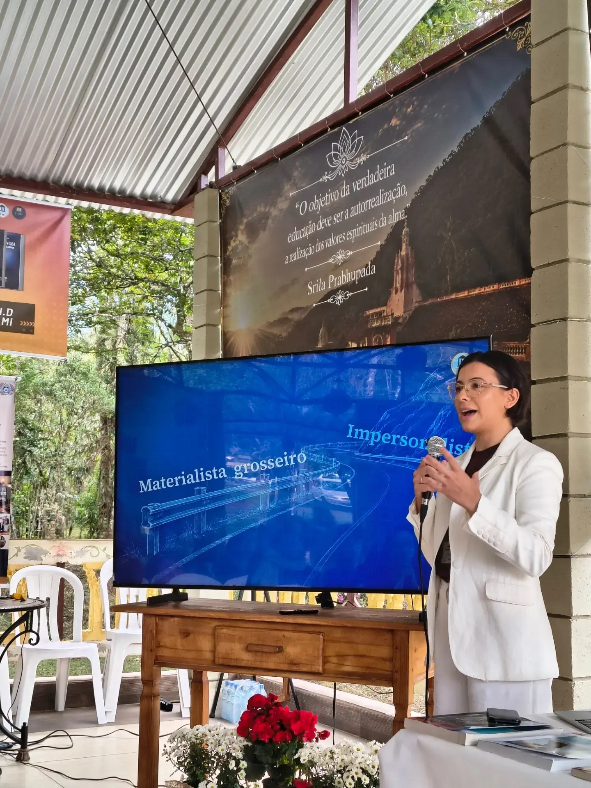

More Than a Conference
The August gathering at Nova Gokula brought academics, researchers, professionals, and serious students into the same conversation. Formal presentations mattered—but the deepest energy came from what happened between them: questions, roundtables, new friendships, and the sense that something could continue.
The two-day BIHS program was intentionally interdisciplinary. Philosophy, dharma and ethics met language, arts and the humanities; questions of mind, culture and society met health, life and the environment. The goal was not to force these fields into one answer, but to create a place where they could listen to one another.

The Gathering Became a Beginning
One of the most encouraging outcomes was personal. In conversations after the event, at least four presenters shared plans to continue their own education—to move from a bachelor’s degree toward a master’s, from a master’s toward a PhD, or to begin a degree they had postponed.
For BIHS, this is especially meaningful. The South American initiative is not meant to create a one-time conference circuit. Its purpose is to encourage serious study, research, writing, mentorship, translation, and durable relationships among scholars who want to bring Bhāgavata thought into thoughtful dialogue with contemporary disciplines.
Ideas Across Disciplines
The presentations and discussions moved across a remarkable range of subjects. Among the themes represented were:
Philosophy, Dharma & Ethics
Questions of reason, moral life, philosophical foundations, and how inherited wisdom can enter contemporary intellectual debate.
Language, Arts & Humanities
Sanskrit, literature, architecture, artistic expression, culture, and the ways meaning is preserved and communicated.
Mind, Culture & Society
Psychology, consciousness, spirituality, religiosity, human flourishing, and the social dimensions of inner life.
Life, Health & Environment
Healthy aging, embodied life, ecology, care, and the relationship between spiritual values and sustainable living.
Interdisciplinary Dialogue
Roundtables allowed participants from different fields to test ideas together rather than remaining inside disciplinary boundaries.
South America as a Network
Participants explored how scholars in Portuguese- and Spanish-speaking regions can stay connected beyond the event itself.
From Presentations to Conversation
The roundtable format was central to the event. Rather than ending with a sequence of lectures, participants were invited into smaller groups where academics and non-academics could ask questions, compare perspectives, and identify areas for future work.
The intention was simple: each person should leave with one idea that expanded their thinking, one question worth continuing, and one connection with someone they wanted to speak with again.
What Comes Next?
The Brazil gathering gave BIHS a clearer picture of the intellectual energy already present in South America—and of the work required to nurture it.
Connect scholars
Identify academics and serious students across Brazil and Spanish-speaking South America, and make it easier for them to find one another.
Encourage study
Support those who want to deepen their formal education, strengthen research skills, or pursue advanced academic work.
Create mentorship
Develop relationships in which experienced scholars can guide emerging researchers, writers, and students.
Build multilingual work
Make room for English, Spanish, and Portuguese scholarship, translation, writing, and future gatherings under shared academic standards.